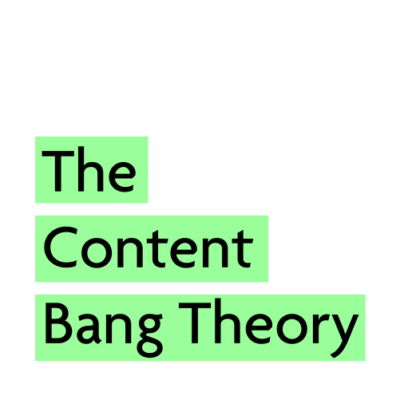

Free Sample
Covering Cardiology, Endocrinology, Oncology, Gynecology and Dermatology

We respect your privacy. Unsubscribe at anytime.
Covering Cardiology, Endocrinology, Oncology, Gynecology and Dermatology
We respect your privacy. Unsubscribe at anytime.

We use real audience data, online community discussions, and search trends to identify content ideas that have actual engagement potential.
AI Tools generate ideas based on pattern recognition from past data, but they don’t validate if those ideas are trending, relevant, or currently engaging real audiences.

We identify emerging and high-impact topics based on current search engine data, social media discussions, and community insights.
AI Tools may suggest generic or outdated ideas because they lack real-time access to live search trends and evolving audience interests.

We focus on healthcare content specifically, curating ideas relevant to medical professionals and tailored to their brand-building goals.
AI Tools provide broad and generic content ideas that often lack industry specificity, making them less useful for specialized audiences like doctors.

We ensure that content ideas are not just unique but also differentiated based on what competitors are posting and what audiences are truly engaging with.
AI Tools often generate similar suggestions for everyone, leading to repetitive content across platforms.

We filter, organize, and curate the best content opportunities so users don’t have to waste time sorting through irrelevant suggestions.
AI Tools require manual prompting, refining, and cross-checking, which can take time and may still yield ideas that aren’t optimized for engagement.
Building a personal brand isn’t just about posting content—it’s about becoming a trusted voice in your field. But to do that, you need to consistently share valuable insights that set you apart.
We take the guesswork out of content creation by researching, filtering, and curating high-impact topics tailored to your specialty. Instead of spending hours figuring out what to talk about, you’ll get a streamlined selection of content ideas, backed by audience insights and industry trends.
But your brand isn’t built on generic information—it’s built on your unique voice, knowledge, and experience. That’s why we provide a solid foundation, so you can focus on adding your personal perspective, engaging your audience, and establishing yourself as a thought leader.
Because real personal branding isn’t just about sharing content—it’s about shaping conversations and making an impact.
No, we are not subject matter experts, but we don't need to be.
Our role is to provide foundational content for your expertise.
We base our research on trusted and reputable sources, such as government websites, academic publications, specialized media, industry professionals, and credible organizations.
You absolutely could! You’re the expert, and with a few tools, you could generate content ideas.
However, this approach would likely require 10x more time and money on average.
For example, a single tool could cost at least five times our fee. Additionally, you’d need to invest significant time analyzing and researching. The sheer volume of data can be overwhelming, and you’d need to filter through it, decide what’s useful, and structure it into actionable content.
Our service takes this hard work off your plate. We have the tools, the data analysis expertise, and the experience to deliver near-finished content.
All you’d need to do is add your unique voice and expertise to make it relevant and one-of-a-kind.
Yes, it allows us to offer the service providing a quality research at such comfortable price. AI takes care of operative tasks while we humans focus on strategy and methodology.

1. We analyze online communities like Quora and Reddit to uncover trending discussions and audience interests.
-- What topics are sparking engagement and generating buzz? --

2. We examine search engines like Google and YouTube to identify what people are actively searching for.
-- What questions are they asking? --
-- What information are they craving? --

3. By combining research and audience analysis, we pinpoint the topics most likely to generate engagement and impact online.
We are a Colombian family living in Canada who, like many migrants, decided to reinvent ourselves.
With long and successful corporate careers— Juan in Digital Marketing and Margarita in Customer Experience— we decided to use our expertise, passion, and the aspects we loved most about our work into creating something unique and meaningful.

The Big Bang Theory fan here. I have always been passionate about researching, analyzing data, and combining insights to create exceptional content.
Over the years, I've had the privilege of working with renowned brands such as Colgate, Hill's, Tom's of Maine, Vanguard, Coca-Cola, and Kia.
While creating content, I identified the ideation stage as the most challenging and critical for a content campaign, requiring extensive research and analysis. That's why I wanted to develop a solution that save time and energy, helping others navigate this crucial phase with ease.

Graphic designer, marketer, and holder of a master's degree in Digital Transformation, I am the strategist behind product conception, development, and continuous improvement.
My work is focused in enhancing user experience and delivering real value. I thrive on listening to users' needs and translating their feedback into actionable improvements, ensuring that our service provides a seamless, satisfying experience.
No meaning, No thriving
No passion, No action
No heart, No mark
We believe that quality healthcare content has the power to change lives.
The medical insights shared on social platforms have helped us improve our own health, and we know they do the same for countless others.
Now, we want to empower healthcare professionals by making content creation easier, saving them time while enhancing relevance and originality.
By supporting those who educate on critical health topics, we’re amplifying their impact—helping to build a more informed, healthier society.